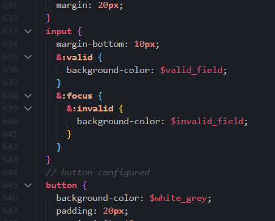
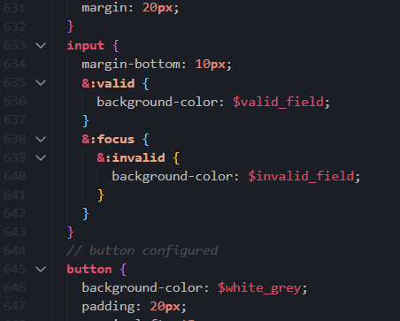

Enhancements
Using SASS for implementation and management of CSS:
Description:
SASS is a preprossecor language that is used for better creation and management of CSS files. For this assessment/website, I learned SASS so that I could more easily stylize my HTML files, with use of nesting, variables, and inheritance.
How it goes beyond the basic requirements of the assessment, and where it has been applied:
The basic styling requirements of the assessment didn't mention the need for any other languages besides CSS and HTML. With the use of SASS (which was allowed), I was able to format IDs, classes and elements in a more organised and creative manner. SASS not only displays my competency for CSS styling, but shows that I am able to enhance the styling suggested, and more in a practical language which I was quick to acquire.
The general requirements of CSS included the appropriate use of ID, element, class, grouping, and contextual selectors. It also required that I utilise Psuedo-Selectors or elements. Specific design requirements of elements on certain pages were also mentioned. Whilst completing these, I used SASS to nest specific styling choices. The nesting allowed me to better visualise the required (and not-required) contextual selectors. Contextual examples include:
- Changing the font colors using :nth-child(odd) and :nth-child(even) nested within a class specified for only the enhancements page.
- Specifying the different background colours for the layla images using :nth-child() nested within the div element, nested within the layla class.
- Styling unique features of ul, li and a only nested within the nav element (using nesting).
- Detailed styling of cells in Swinburne timetable using certain tr:nth-child within a td:nth-child. This included background color and border radius.
I also used SASS to make my CSS less repetitive. Instead of repeating styling settings for different elements, I either created a variable at the start of the page (which was also beneficial to change quickly), or used compounding/grouping(required). Although compounding required less lines I felt that using variables instead (or in conjunction with compounding) allowed me to save time in case I changed my mind on the design (such as the colour pallette or font-style). Examples of variable use which enhanced the managability of the css styling include:
- Using variable colours at the start of the file in case they had to be changed.
- Using variables for colours and border-radius settings within the compounding of td:nth-child tr:nth-child combos (with a , after a td and tr).
Finally, I included the use of inheritance to extend already specified styling. Although similar to variable uses, inheritance allowed me to extend much more css styling from one element to another. Examples of inheritance include:
- Extending the specifics of the active class onto li a:hover.
What code was needed for implementation:
code required for SASS required (after installing SASS on VSCode) to stylise in the sass.scss file as I would like to see in the .css file, only in the syntax and freedom SASS allowed. This included being able to use brackets after an element within brackets after the first element it was nested in (for contextual styling). For inheritance uses the inclusion of CSS properties from one element to another required using @extend followed by the element who's properties I wished to extend (into whatever element). When variables were used in conjunction with or instead of grouping (when necessary), they were done so by declaring their name (after a $), followed by : and whatever styling I wanted to use the variable for. One example of this was "$cle: #00cccc;", which was mentioned in elements by declaring "background-color: $cle;". This code is not only in the .scss file, but is also attached on the right (in pictures).
Font colours change within :nth-child()s for enhancements page
.f1 {
background-color: $charcoal;
width: 700px;
padding: 20px;
margin: 20px 0px 20px 0px;
h4 {
font-size: large;
}
h3 {
font-size: xx-large;
}
&:nth-child(odd) {
background-color: $lemon;
border-radius: 0px 30px 30px 0px;
h3 {
color: $charcoal;
padding-bottom: 4px;
}
th:nth-child(odd) {
padding: 30px;
}
}
&:nth-child(even) {
border-radius: 30px 0px 0px 30px;
h2,
h3,
h4,
h5 {
color: $strawberry;
}
p {
color: $mauve;
}
}
}
Layla gallery code
.layla_gallery {
height: auto;
display: flex;
flex-direction: row;
flex-basis: 50%;
flex-wrap: wrap;
section {
background: linear-gradient(40deg, $strawberry, $mauve, $white_grey);
padding: 20px;
}
h2,
p {
color: $charcoal;
}
div {
padding: 15px;
margin: 30px;
box-shadow: 0px 4px 8px 0px rgba(0, 0, 0, 0.2);
&:nth-child(even) {
background-color: $light_pink;
}
&:nth-child(odd) {
background-color: $strawberry;
}
}
div,
img {
border-radius: 30px;
}
}
Nav style nested
nav {
ul {
list-style-type: none;
}
li {
display: inline;
float: right;
margin-right: 40px;
background-color: $white_grey;
padding: 20px 20px 40px 20px;
}
a {
color: $plum;
padding: 5px;
}
}
Nth:child() styling for border radius and color variables in timetable
td:nth-child(1),
tr:nth-child(1) {
background-color: $light_pink;
border: 1px solid $charcoal;
}
tr:nth-child(2) {
border: 1px solid $charcoal;
}
td:nth-child(8) {
width: 200px;
}
/*below uses cells within timetable classes slots to give each class a background color from start to finish - got this from here: https://css-tricks.com/useful-nth-child-recipies/*/
/*prog */
tr:nth-child(4) td:nth-child(3),
tr:nth-child(3) td:nth-child(3),
tr:nth-child(5) td:nth-child(3),
tr:nth-child(6) td:nth-child(3),
tr:nth-child(8) td:nth-child(6),
tr:nth-child(9) td:nth-child(6),
tr:nth-child(10) td:nth-child(6),
tr:nth-child(11) td:nth-child(6) {
background-color: $programming;
}
/*web */
tr:nth-child(7) td:nth-child(2),
tr:nth-child(6) td:nth-child(2),
tr:nth-child(8) td:nth-child(2),
tr:nth-child(9) td:nth-child(2),
tr:nth-child(10) td:nth-child(4) {
background-color: $website;
}
/*representing a timetable clash by mixing colours*/
tr:nth-child(11) td:nth-child(4) {
background-color: $clash;
}
/*network */
tr:nth-child(13) td:nth-child(3),
tr:nth-child(12) td:nth-child(3),
tr:nth-child(14) td:nth-child(3),
tr:nth-child(15) td:nth-child(3),
tr:nth-child(16) td:nth-child(3),
tr:nth-child(17) td:nth-child(3),
tr:nth-child(20) td:nth-child(5),
tr:nth-child(21) td:nth-child(5),
tr:nth-child(22) td:nth-child(5),
tr:nth-child(23) td:nth-child(5) {
background-color: $network;
}
/*cle */
tr:nth-child(9) td:nth-child(5),
tr:nth-child(8) td:nth-child(5),
tr:nth-child(10) td:nth-child(5),
tr:nth-child(11) td:nth-child(5),
tr:nth-child(12) td:nth-child(4) {
background-color: $cle;
}
/*using border-radius for certain childs: */
tr:nth-child(12) td:nth-child(4),
tr:nth-child(11) td:nth-child(5),
tr:nth-child(23) td:nth-child(5),
tr:nth-child(17) td:nth-child(3),
tr:nth-child(9) td:nth-child(2),
tr:nth-child(11) td:nth-child(6),
tr:nth-child(6) td:nth-child(3) {
border-radius: $left_br;
}
tr:nth-child(8) td:nth-child(5),
tr:nth-child(20) td:nth-child(5),
tr:nth-child(12) td:nth-child(3),
tr:nth-child(10) td:nth-child(4),
tr:nth-child(6) td:nth-child(2),
tr:nth-child(8) td:nth-child(6),
tr:nth-child(3) td:nth-child(3) {
border-radius: $right_br;
}
Colour variables
/*colour variables here*/
$white_grey: #e8e8e8;
$charcoal: #201d1f;
$white: white;
$light_pink: #f2cfd6;
$strong_txt_col: #e8e8e8;
$mauve: #f2cfd6;
$plum: #b9314f;
$light_mauve: #f2cfd6;
$strawberry: #dc7f91;
$eggshell_grey: antiquewhite;
$lemon: #dbd670;
$programming: #ccccff;
$website: #ff99cc;
$clash: #80b3cc;
$network: #cccc99;
$cle: #00cccc;
$valid_field: #bff2c6;
$invalid_field: #f2cfd6;
$nav_color: #161416;
Nth:child() for colours and border radius (a snippet)
tr:nth-child(9) td:nth-child(5),
tr:nth-child(8) td:nth-child(5),
tr:nth-child(10) td:nth-child(5),
tr:nth-child(11) td:nth-child(5),
tr:nth-child(12) td:nth-child(4) {
background-color: $cle;
}
/*using border-radius for certain childs: */
tr:nth-child(12) td:nth-child(4),
tr:nth-child(11) td:nth-child(5),
tr:nth-child(23) td:nth-child(5),
tr:nth-child(17) td:nth-child(3),
tr:nth-child(9) td:nth-child(2),
tr:nth-child(11) td:nth-child(6),
tr:nth-child(6) td:nth-child(3) {
border-radius: $left_br;
}
Third parties cited for this enhancement feature:
Links to where this has been applied:
- Font colour change (on this page, where you're reading)
- Layla gallery code
- Nav style nested vs others (You can view differences in product page's li)
- Swinburne timetable cells
- Colour variables, this is also everywhere but can be viewed in index.html nicely
- swinburne timetable cells, in regards to border-radius
Does it run on Firefox browser?
Yes :)
Using SASS images:

Using Additional CSS Properties:
Description:
To extend the quality of the website's design and usability, I tried using additional CSS properties which were not extensively taught or explained in any of the lectures. This includes use of psuedo-elements and psuedo-classes. As a result of using additional properties, my website has become more responsive to the user's experience, and also appears more detailed in design (and quality).
How it goes beyond the basic requirements of the assessment:
The basic requirements of CSS necessary briefly mention only using psuedo-classes and elements at least once, so I decided to incorporate those selectors extensively. This includes using selectors not mentioned in the lectures. Here are some of the following things I've incorporated:
- Used psuedo-elements ::before and ::after nested with the H1 with a mixin called before_after to create a tablet shape.
- Used ::before and ::after to create dividing lines between h5 in enhancements.
- Used pseudo-class :hover for the images in about_sec class to lose their grayscale filter (when hovered over).
- Mentioned tr:nth-child() td:nth-child() pairings to colour (and use border-radius for some)the childs of specific tds and trs within the table.
- Used variable for background-color to change for input :valid (input &:valid) to colour input when info entered is viable to submit.
- Used variable for background-color to change for input :invalid (input &:focus &:invalid), changes input background if data invalid (or focused on with no input).
What code was needed for implementation:
Mixin for tablet shape
@mixin before_after {
content: "";
display: block;
background-color: $charcoal;
height: 20px;
width: 200px;
}
h1 {
font-size: 60px;
margin-left: 60px;
padding-top: 30px;
font: 1.2em $reg_font bold;
&::before {
border-radius: $right_br;
}
&::after {
margin-top: 3px;
border-radius: $left_br;
}
&::before,
&::after {
@include before_after();
}
}
Dividing lines fo h5 in Enhancements
.f1 {
background-color: $charcoal;
width: 700px;
padding: 20px;
margin: 20px 0px 20px 0px;
h4 {
font-size: large;
&::before {
@include lines();
}
}
h3 {
font-size: xx-large;
}
&:nth-child(odd) {
background-color: $lemon;
border-radius: 0px 30px 30px 0px;
h3 {
color: $charcoal;
padding-bottom: 4px;
}
th:nth-child(odd) {
padding: 30px;
}
}
&:nth-child(even) {
border-radius: 30px 0px 0px 30px;
h2,
h3,
h4,
h5 {
color: $strawberry;
}
p {
color: $mauve;
}
}
}
Filter changes in about_sec
.about_sec {
background-color: $white_grey;
padding: 70px 70px 70px 270px;
height: 800px;
display: flex;
justify-content: center;
flex-flow: column wrap;
align-items: baseline;
align-content: space-around;
img {
filter: grayscale(100%);
&:hover {
filter: none;
}
}
}
Using :nth-child for td and tr in timetable
tr:nth-child(9) td:nth-child(5),
tr:nth-child(8) td:nth-child(5),
tr:nth-child(10) td:nth-child(5),
tr:nth-child(11) td:nth-child(5),
tr:nth-child(12) td:nth-child(4) {
background-color: $cle;
}
Input:valid and Input &:focus &:invalid
input {
margin-bottom: 10px;
&:valid {
background-color: $valid_field;
}
&:focus {
&:invalid {
background-color: $invalid_field;
}
}
}
Third parties cited for this enhancement feature:
Where this has been applied in the website:
- Tablet shape can be viewed on any page, since it is beside h1 on the top of every page
- Dividing feature is where you're reading now
- For image filter :hover (pic of me has it)
- For :nth-child() in table (in regards to tr and td)
- For :valid and :focus :invalid input changes (try entering data in input sections)
Does it run on Firefox browser?
Yes :)
Psuedo-Selectors images:
 
